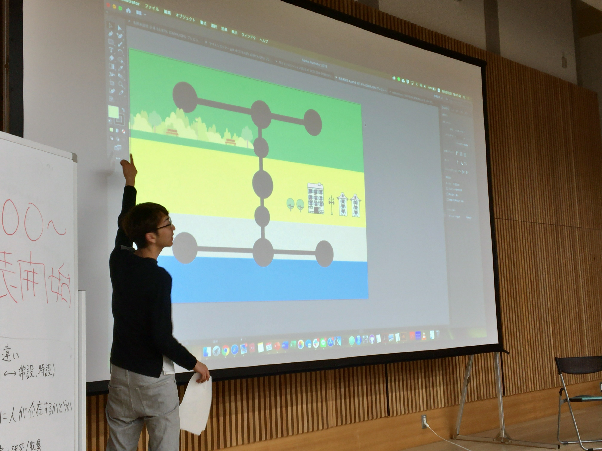
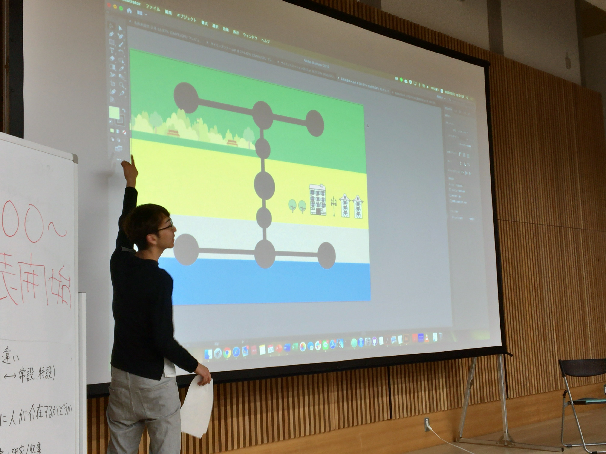
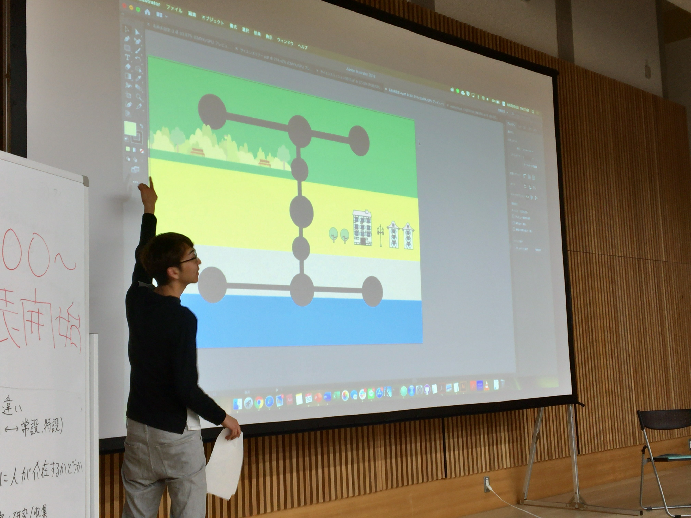
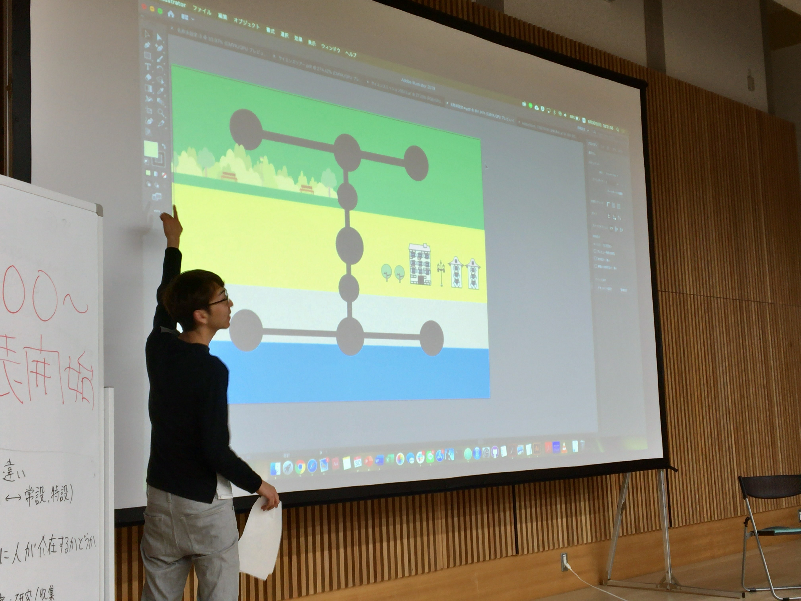

 


SCを考える会の理念
SCを考える会は「多様なコミュニケーターの場を提供し、新たなSCのあり方を探求する」という理念のもとに2019年３月に生まれた会です。もともとは科学の公衆的理解を目的とされていたサイエンスコミュニケーションは、現在ではその手法はますます多様になりワークショップやデジタルメディアを通したものも現れています。また、サイエンスコミュニケーションは社会に対する理解・意思決定を支えるものとしても注目され、その内容においても多様になっています。しかしながら、その多様さ故にコミュニケーター同士の交流がそれほど多くはないというのも事実です。そこで、お互いの活動や理念を知り、それらの違いや共通点を議論しあい、それをもとに新たな活動を創り出すことのできる場をSCを考える会は目指しています。
[2019/8/29]第3回SCを考える会の募集が終了しました。ありがとうございました。
[2019/8/29]第3回SCを考える会の開催が決定しました。開催日程は9/8です。

[2019/8/29]SCを考える会の公式ホームページを開設しました。